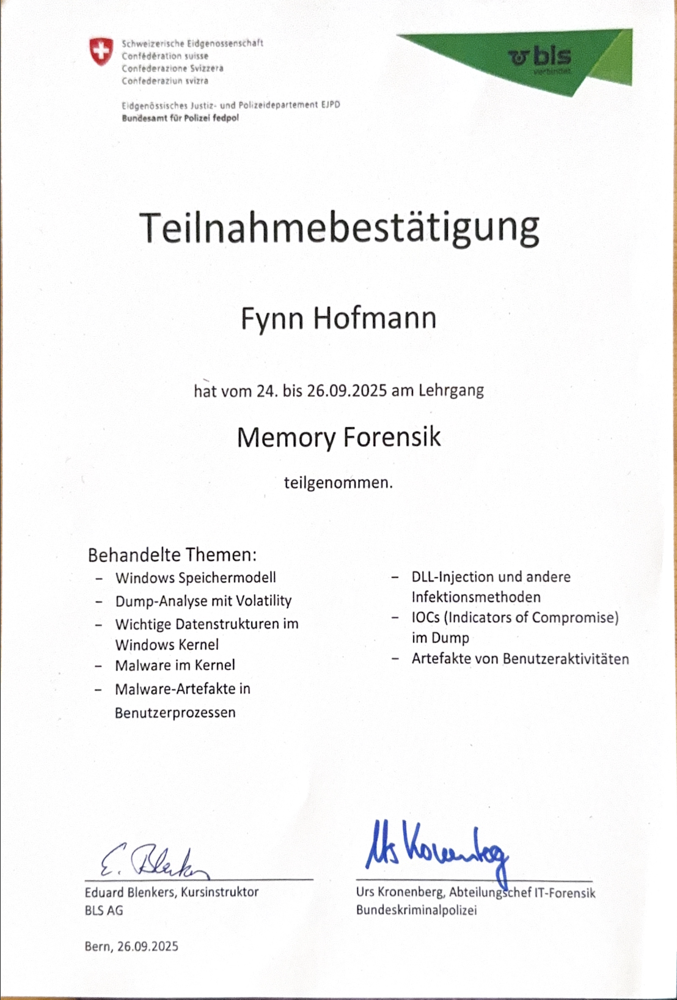

Was ich kann
Übersicht über Kenntnisse und Erfahrungen aus meiner Ausbildung zum ICT-Fachmann EFZ sowie Zertifikate.
Kenntnisse aus der Ausbildung bei der BLS AG
IT-Support
- Bearbeitung von Bestellungen und Störungsmeldungen
- Fehleranalyse und Problemlösung im 1st-Level-Support
- Dokumentation von Supportfällen in ServiceNow
- Stellvertretung für Zebra-, Etikettendrucker und Plotter
- Unterstützung bei Software- und Hardware-Problemen
- Verwaltung von Benutzerrechten und Rollen in Active Directory (AD), Azure AD (AAD) und Omada (IAM)
ServiceNow
- Entwicklung und Pflege von Service Catalog Items (Classic UI / sc_cat_item), inkl. Variablen, RITMs, SCTASKs sowie zugehöriger Prozesse
- Erstellung, Bearbeitung und Testen von Incidents (INC), Service Catalog Tasks (SCTASK) und Interaktionen im Agent- und Service Operations Workspace
- Erstellung und Pflege von Knowledge-Base-Artikeln zur Benutzer- und Supportunterstützung
- Konfiguration von Workflows und Genehmigungsprozessen mit dem Flow Designer
- Mitarbeit bei der Migration von TopDesk auf ServiceNow (Migration von Knowledge-Base-Artikeln sowie Tests im Service Operations Workspace)
Zertifikate
Memory-Forensik-Kurs

Vertiefte Einführung in die Memory-Forensik unter Windows. Analyse von Speicherabbildern
mit Volatility, Verständnis des Windows-Speichermodells sowie Identifikation von Malware
in Kernel- und Benutzerprozessen. Erkennen von DLL-Injection, typischen
Infektionsmethoden, Indicators of Compromise (IOCs) und Artefakten von Benutzeraktivitäten
in Memory-Dumps.
Ambassador für Login Berufsbildung

Repräsentation des Unternehmens bei Schulbesuchen und Berufsmessen, Durchführung von
Präsentationen sowie Mitwirkung an Marketing- und Social-Media-Inhalten.
Basislehrjahr im BBC

Im Berufsbildungszentrum haben wir folgende Themen angeschaut: Betriebssysteme (Windows 10, 11 und Linux), Office & Software, Hardware, Support, Netztechnik, Störungsbehebung,
Server Grundlagen, Vertiefungsarbeit und Automatisieren mit Skripten (PowerShell)
Zurück zur Startseite
Fynn Hofmann, 2026